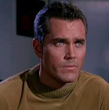
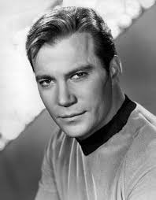

Star Trek
Une trilogie appréciée
Live long and prosper
Les nouveaux films à partir de 2009
Star Trek 11
Star Trek : Into Darkness
Star Trek Beyond
Ma vidéo
Portraits des capitaines de la série originale
USS Enterprise
Vers l'infini et au-delà !
×
L'USS Enterprise est le vaisseau du Capitaine Kirk
 
Le QG